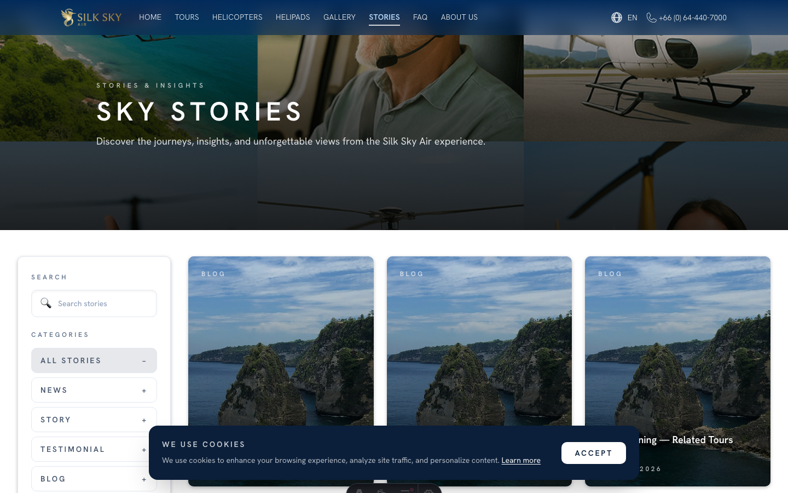
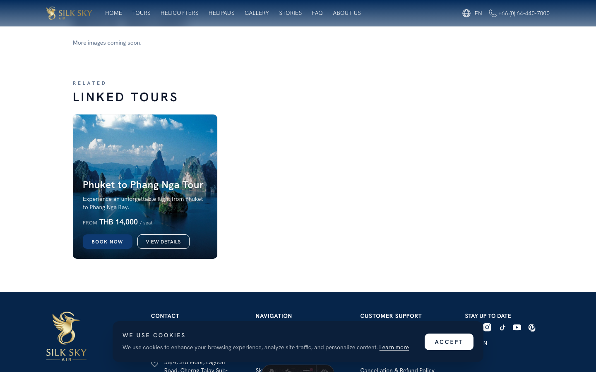
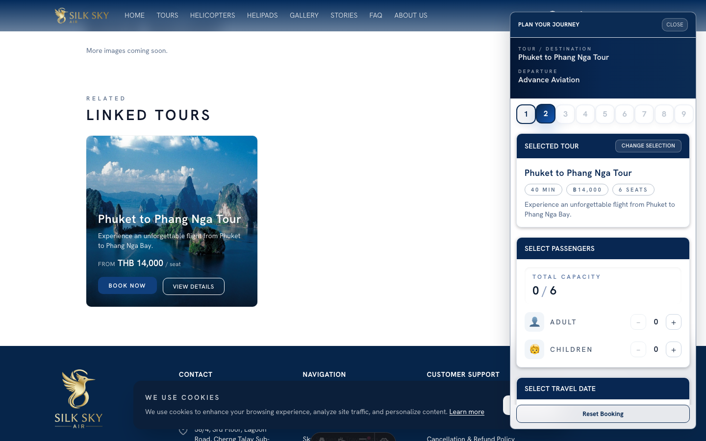

Related Tours
App: WebSite Who uses it: Support agents, marketing, anyone helping customers explore the site. What it does: Each Sky Story detail page ends with a Related Tours section, so a reader who's just finished a story can immediately book the tour it describes.
Before you start
- Staging URL:
https://staging.www.silkskyair.com - Account: Not required — this is a public page.
- Prerequisites: at least one published Sky Story exists with at least one related tour linked (and that tour has a hero or feature image, otherwise the WWW filter eliminates it).
Step-by-step
Step 1 — Open the Sky Stories index
Navigate to the Sky Stories landing page.

What you should see: A grid of Sky Story cards, each with a cover image, title, and short description.
Step 2 — Open a Sky Story
Click any story card to open its detail page.
What you should see: The story's hero image and opening copy. Scroll down to read the full story.
Step 3 — Scroll to the Related Tours section
After the story content, the page ends with a Related Tours section.

What you should see: A heading "Related Tours" (translated in non-English locales) followed by one or more tour cards. Each card shows the tour name, hero image, and a call-to-action.
Step 4 — Click into a related tour
Click any tour card.

What you should see: The tour's standard detail page loads — same as if you'd navigated to it via the main Tours menu.
Tips & common questions
- Why doesn't a story show a Related Tours section? Because no related tour has been linked to it in BackOffice, or the linked tour has no hero/feature image (the WWW filter requires one). Editors can attach tours via the SkyStories module in BackOffice.
- Does the order of tours matter? Yes — the order in BackOffice is the order shown on the page.
- Are these translated? Yes — the section heading and tour titles use whichever locale the reader has selected.